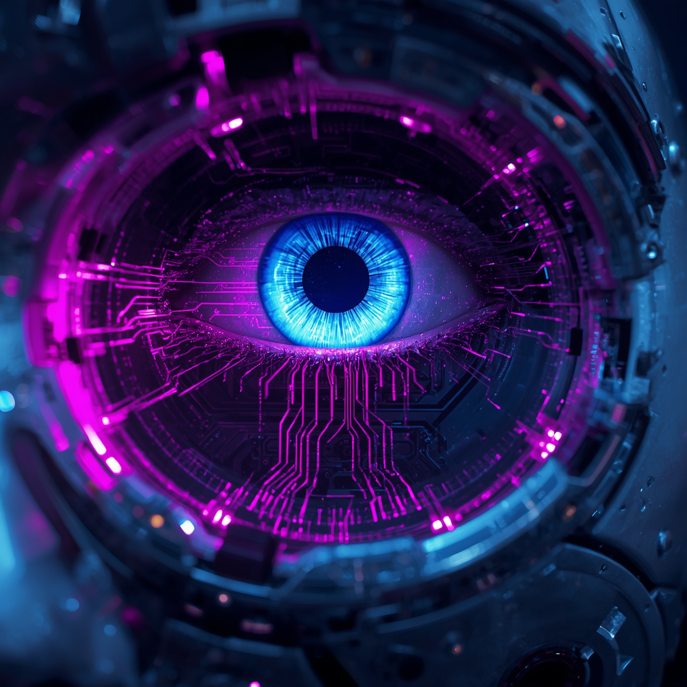

1. A Revolução do SaaS: Por que não instalamos mais tantos programas?
Você lembra da última vez que comprou um CD-ROM para instalar um jogo ou um programa no computador? Provavelmente não, ou faz muito tempo! Hoje em dia, a palavra de ordem no mundo dos softwares é SaaS, que significa Software as a Service (ou Software como Serviço).
Em vez de você comprar um programa, baixar um arquivo gigante e instalar no seu HD, você simplesmente acessa o serviço pela internet. Toda a parte pesada roda nos servidores das grandes empresas, e não na sua máquina.
- Exemplos clássicos: Netflix, Spotify, Google Drive e Canva.
- A grande vantagem: Você não precisa se preocupar com espaço no disco ou se o seu computador vai aguentar o tranco. Se você tem internet e um navegador, você tem o software.
2. Inteligência Artificial e Softwares Inteligentes

Se antes os softwares eram apenas ferramentas que seguiam ordens exatas ("se eu clicar aqui, faça aquilo"), hoje eles aprenderam a pensar — ou quase isso. A Inteligência Artificial (IA) transformou os programas em assistentes pessoais ultra-capazes.
Agora, os softwares não são mais estáticos. Eles aprendem com o seu comportamento. Quando o Spotify cria uma playlist perfeita para o seu gosto, ou quando o corretor do celular adivinha a próxima palavra que você vai digitar, é a IA trabalhando nos bastidores do código.
Das ferramentas de geração de imagens aos chatbots de atendimento, os softwares inteligentes vieram para eliminar as tarefas repetitivas e deixar a nossa rotina muito mais ágil.
3. Como os Softwares são Criados? (O básico do Desenvolvimento)
Por trás de todo aplicativo bonito e funcional, existe uma montanha de linhas de código. Mas como tudo isso ganha vida? O processo começa com a lógica de programação, que é basicamente escrever um manual de instruções super detalhado para o computador seguir.
Os desenvolvedores usam as linguagens de programação para conversar com a máquina. É como se fossem idiomas diferentes:
- Python: Muito usado para Inteligência Artificial e dados.
- JavaScript: O rei da interatividade nos sites da internet.
- C++: Superpoderoso, muito presente nos jogos pesados.
Para juntar tudo isso, os programadores usam editores de código (como o próprio VS Code!). É ali que a mágica acontece, transformando texto puro em ferramentas que mudam o mundo.
4. Segurança Digital: Como os softwares se defendem de ameaças
Construir um software incrível não adianta nada se ele for vulnerável. No mundo digital, a segurança é uma corrida constante de gato e rato. Todos os dias, surgem novas ameaças, e os softwares precisam de escudos atualizados para proteger nossos dados.
É por isso que o seu celular e o seu computador vivem pedindo para atualizar o sistema. Cada atualização geralmente corrige uma "brecha" que os hackers poderiam usar para invadir o sistema.
Os desenvolvedores usam técnicas como a criptografia (que engenha as informações para que ninguém consiga ler no caminho) e testes rigorosos de invasão para garantir que suas fotos, senhas e dados bancários fiquem trancados a sete chaves. Mantenha seus programas atualizados; a sua segurança agradece!